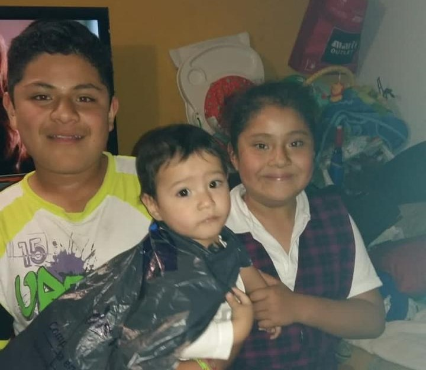
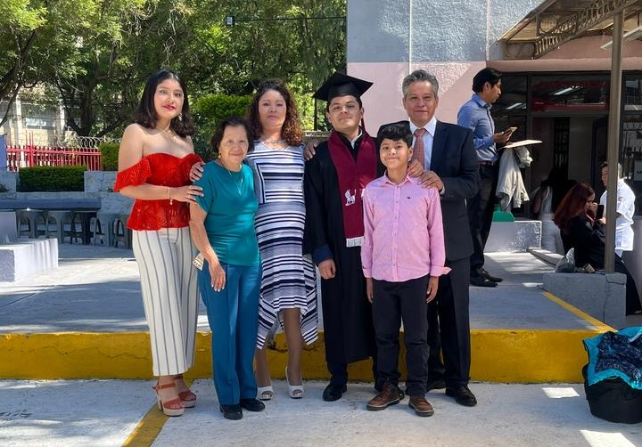
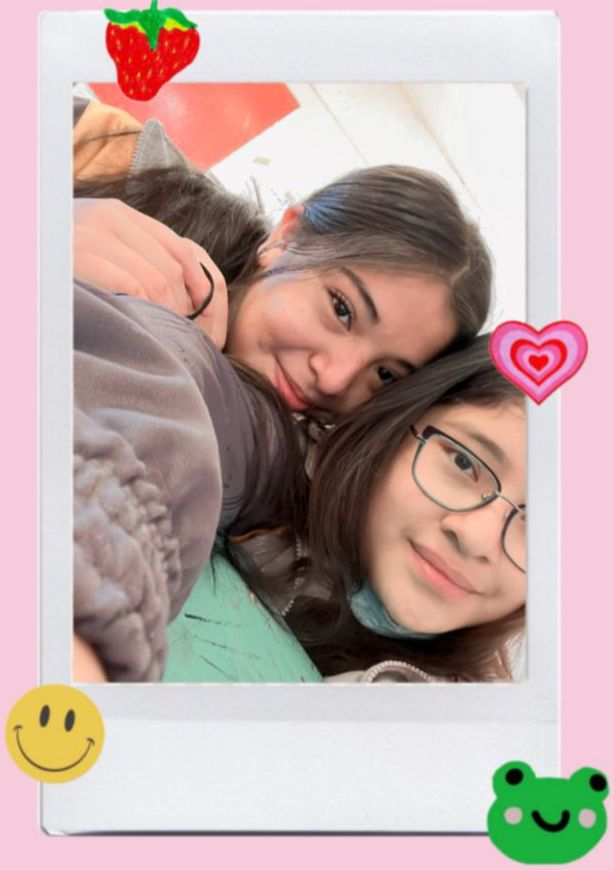
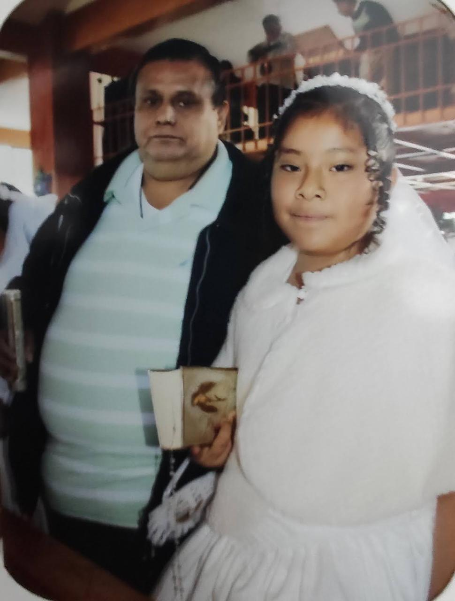
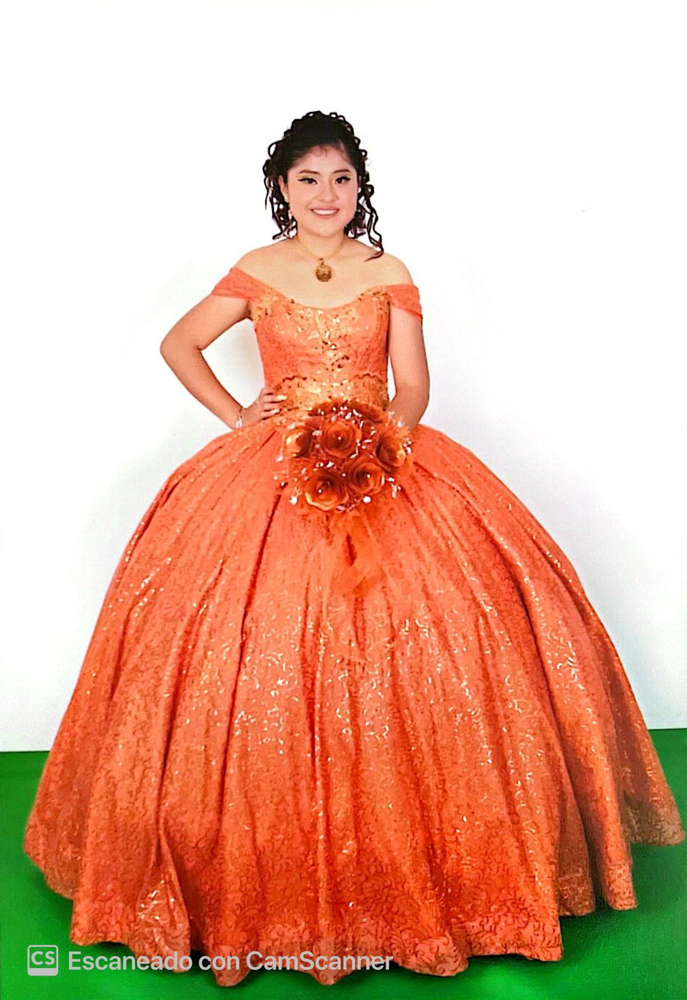
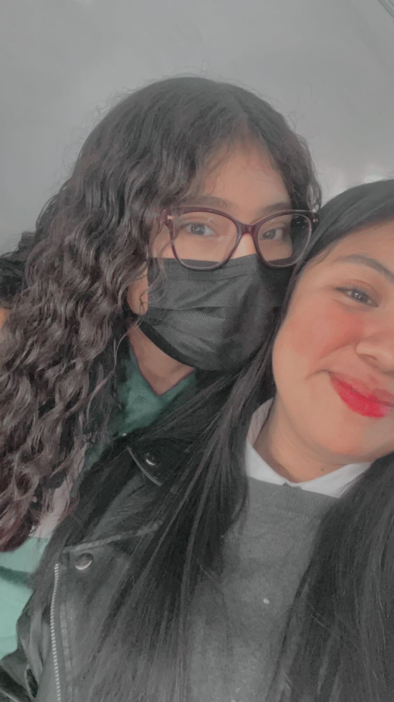
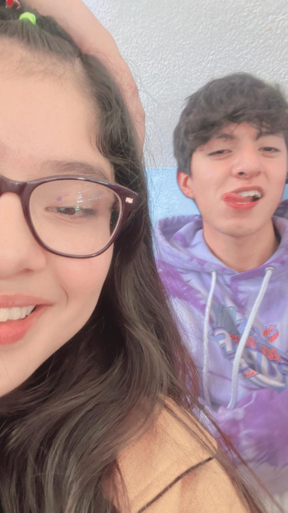

Hola, soy Lucia Rubi Gutierrez Luna y esta es la historia de mi vida.
Naci el 9 de Marzo de 2007 en el Estado de Mexico, cuando tenia la edad de 3 me mandaron por primera vez al kinder, todo fue muy raro, recuerdo que el primer dia llore porque pensaba que me abandonaban, posteriormente me fui acoplando.
Tengo dos hermanos, el mayor me gana por 4, despues voy yo y por ultimo mi hermano menor, el nacio cuando yo tenia 8.
Mi mama se llama Lucia y ella es la que mas se ha encargado tanto de mis hermanos como de mi, tengo una madre maravillosa que apesar de todos los desafios y problemas que tenia siempre supo y sabe como sacarnos adelante a mis hermanos y a mi.
Cooci a la actual pareja de mi madre cuando tenia aproximadamente 6 y a decir verdad, me agrada mucho, tambien nos ha visto como si fueramos sus hijos, no digo que todo sea perfecto, pero nos llevamos muy bien y al igual que a mi mama, a el tambien le agradezco por todas y cada una de las cosas que nos ha dado y brindado, no cualquier persona lo hace...



A la edad de 12 sali de la primaria y entre a la secundaria y conoci a nuevos amigos, una de ellas fue Karen y me llevaba super bien con ella, me gustaba tener su amistad, pero despues salimos y nos distanciamos bastante, ella por su camino y yo por el mio.
Si mal no recuerdo a esad edad mi papa nos llevo a conocer la piramide de CHICHEN ITZA y estuvo genial ese dia.

En cuanto a mi familia, mi abuelito fallecio cuando yo tenia 14, es decir, el 1 de Enero del 2021 el ya no estaba y fue un suceso muy duro para mi debido a que fue un padre para mi, me cuido y vio por mi como nadie mas lo haria, me gustaba la relacion que tenia con el, a la fecha lo sigo echando de menos.


Posteriormente entre a preparatoria y tuve mis XV, me diverti y los disfrute bastante.
Recuerdo que en un inicio no queria tener fiesta, pero mi familia me convencio y asi fue como tuve mi fiesta de XV, no me arrepiento de haber tenido esa fiesta y que mi madre y su pareja me hicieran esa fiesta.
En la preparatoria he conocido a mas personas y me hice de algunas enemistades, pero en este caso me concentrare mas en mis mejores amigos los cuales llevan por nombre Abigail y Miguel, a la fecha son los mejores amigos que he tenido.
Cada uno me demuestra cada vez mas el afecto que me tienen, me soportan y a decir verdad algunas veces no entiendo como lo hacen al igual que mi familia, a veces tengo muy mal genio. Cada uno me demuestra su afecto a su manera y yo demuestro el mio de otra forma.

